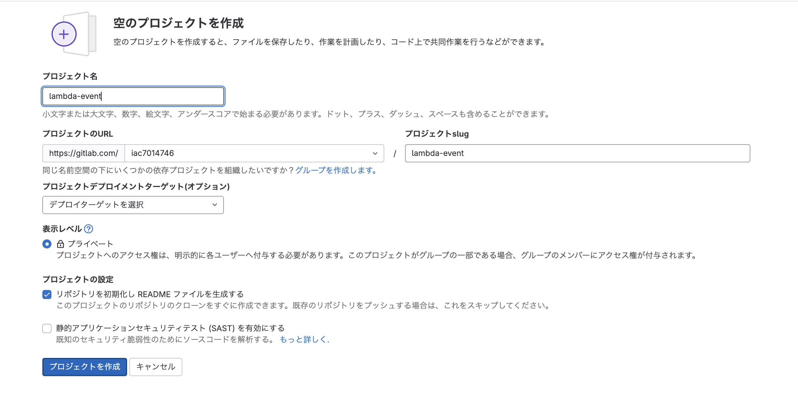
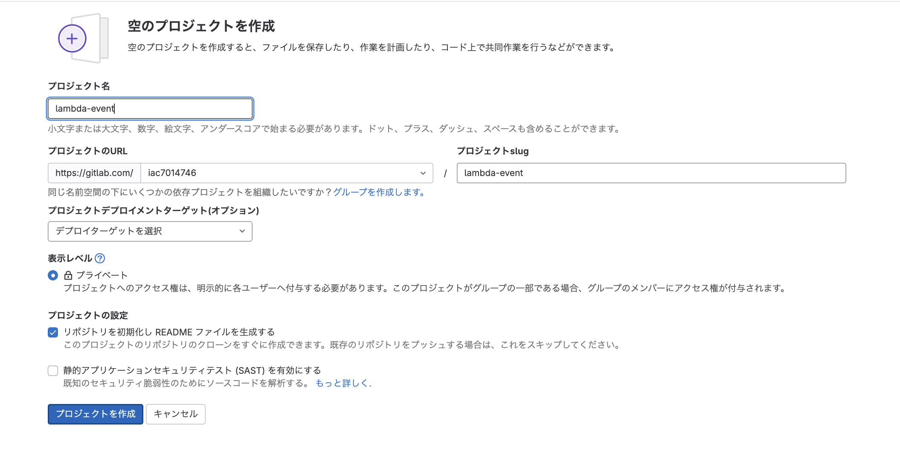

LambdaとEvent作成フロー¶
開発環境準備¶
gitlabのリポジトリ作成¶
lambdaとEventBridgeを作成するので、lambda-eventと言うリポジトリを作成する。 このリポジトリに、lambdaとEventBridgeを作成するテンプレートファイルを格納していく。

ローカルでの開発準備¶
ローカルで開発をしていくために作成したPJをローカルにCloneする。
lambdaとEventBridgeを作成するので、lambda-eventと言うリポジトリを作成する。 このリポジトリに、lambdaとEventBridgeを作成するテンプレートファイルを格納していく。

ローカルで開発をしていくために作成したPJをローカルにCloneする。